Why Education?
Providing schools with safe environments allows the students to gain a basic education and the technical skills to enable sustainable livelihoods and lead productive lives. Over a decade after the war, the Makeni community is still severely neglected by the Sierra Leonean government. Thus, Schools for Africa Fund strives to raise awareness about the situation in Sierra Leone as well as raise funds to provide the children with sustainable educations.
Education provides these disadvantaged children with the voice to speak out and a plethora of opportunities for a brighter future. Education is the key to halting this cycle of poverty, as the mere ability to read and write has the potential to lift thousands out of poverty. Schools would provide not only widespread literacy, but also a better understanding of basic sanitation practices and other crucial skills.
Post-war Recovery
After Eleanor returned from Kenya, she realized something was missing beyond the basic education provided in classrooms-something that she had learned from growing up in the Silicon Valley: entrepreneurship. Schools for Africa Fund has since provided opportunities such as mentorship, seed funding, design workshops for rapid prototyping.
The ebola outbreak in West Africa shut down schools in Sierra Leone for nine months, but schools reopened on April 14, 2015. Despite the shutdown, the communities in which the projects were implemented demonstrated incredible resilience. To combat the shutdown, Schools for Africa distributed toolkits in the areas of electronics, digital media, and crafts. From simple kits demonstrating the science of capacitance and resistance to holding regional design challenges, these at-home labs have since provided the capacity for future innovators to expand their creative outlook.

 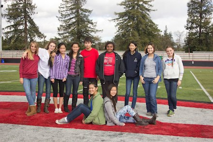
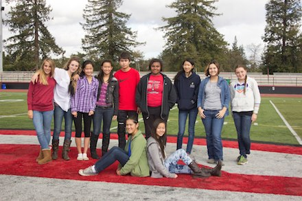
 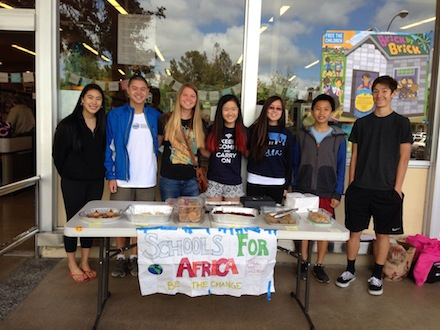
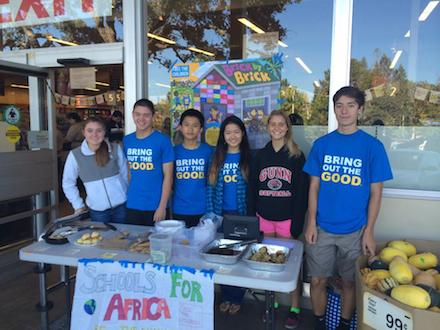
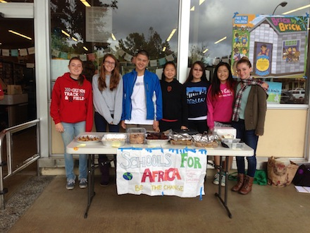
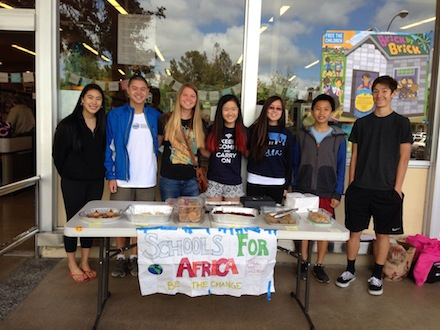
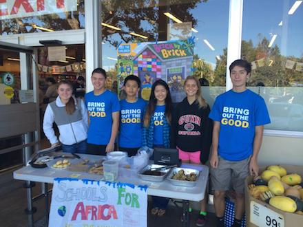
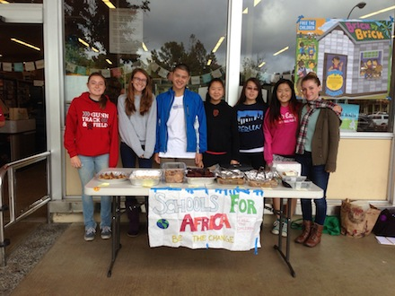
 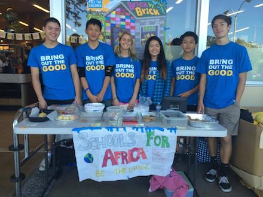
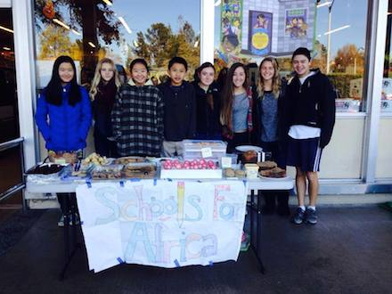
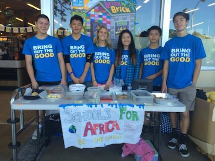
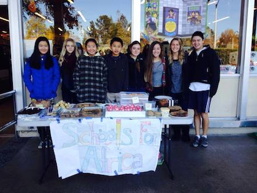
 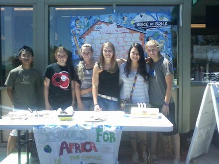
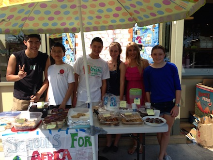
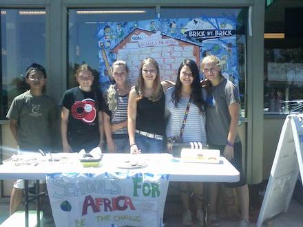
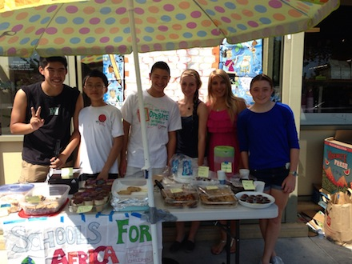
{kind=link}